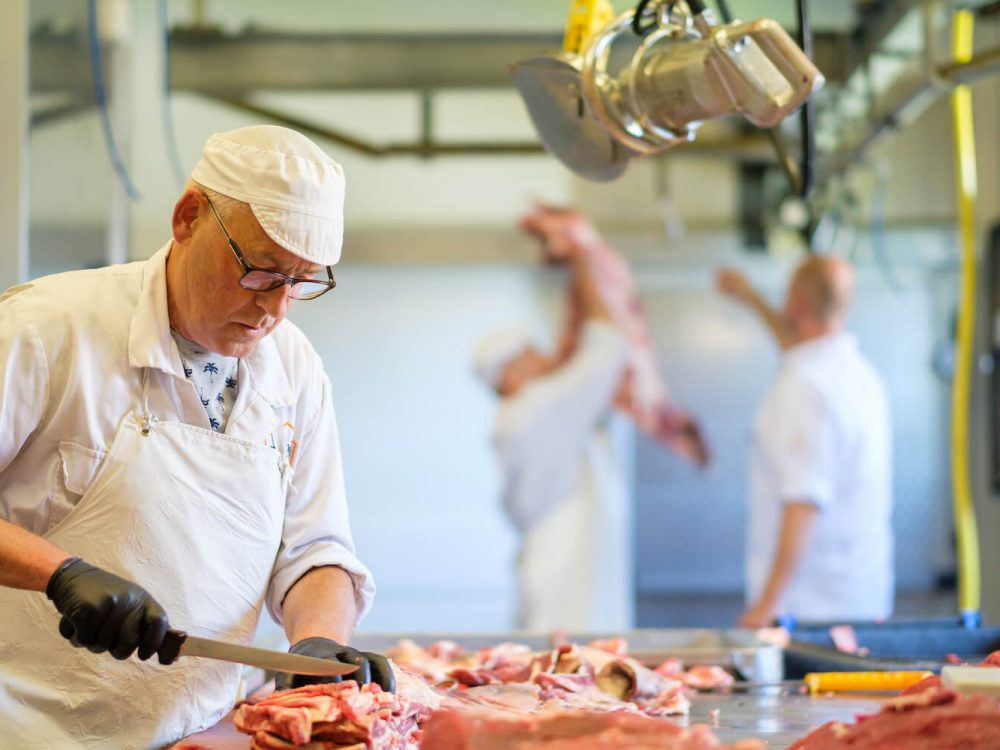
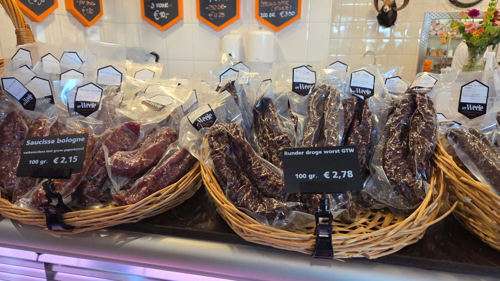
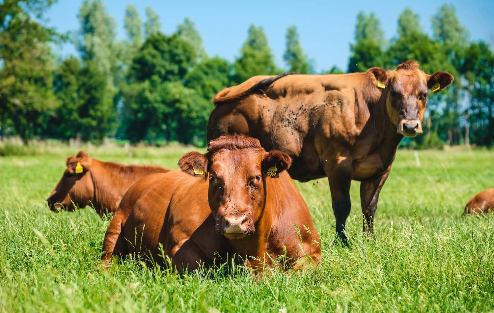
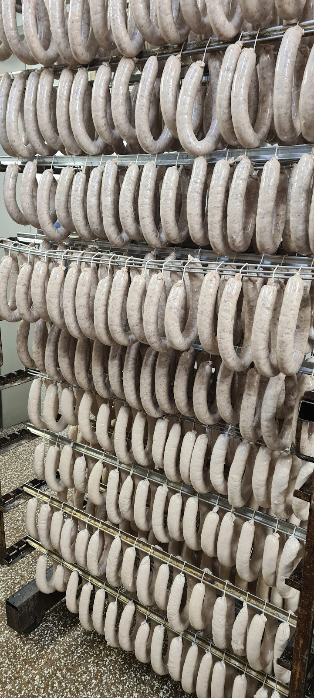
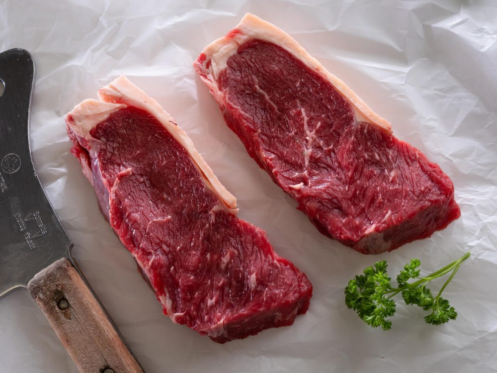
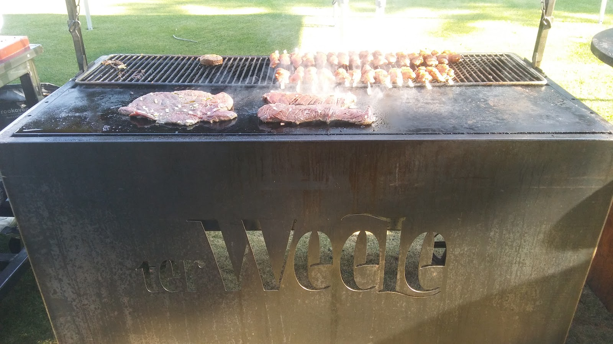
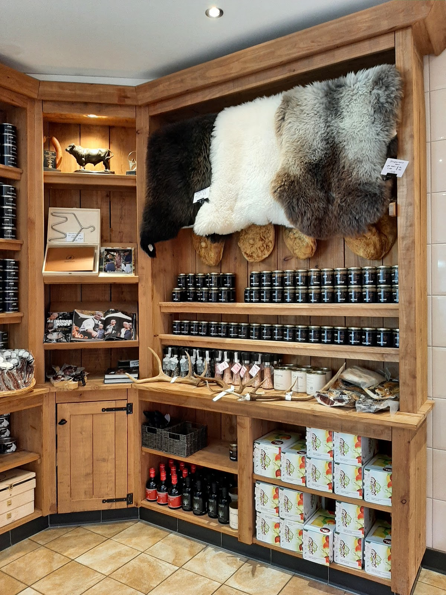
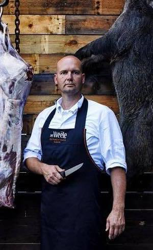
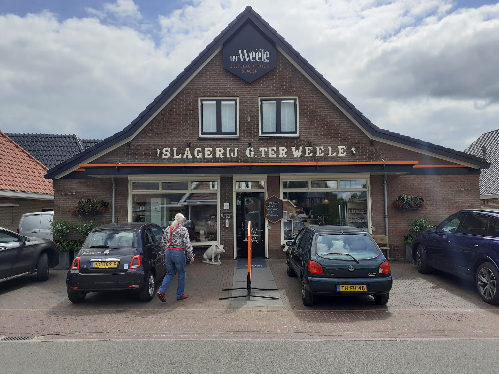

Runderlapjes
Kant en klaar. Alleen opwarmen.

Zelfslachtende slager in Oene
Vers vlees, droge worst en wild van uw eigen slager. Kom langs, of bel even wat u nodig hebt.
4,8 op Google, uit 311 reviews
Dit noemen klanten zelf in hun reviews. Wat er vandaag op de krijtborden staat, ziet u in de winkel, of hoort u als u belt.
Kant en klaar. Alleen opwarmen.
Rijst of aardappel erbij en u eet.
Ook die hoeft u alleen nog op te warmen.
Een stuk van een paar kilo? Dat kan.
Amerikaans, ook voor een hele tafel.
Ook bekend als kruutmoes. Zelf bereid.
Runder droge worst, saucisse bologne en meer.
Stijlvol, om iemand blij mee te maken.

Zelfslachtend staat niet voor niets op ons schild. Bij ons komt het vlees niet kant en klaar binnen. We slachten zelf, en daarna snijden en bereiden we het ook zelf.
Dat is werk dat u terugziet in de toonbank, en proeft op uw bord.




“Ik heb gisteren voor 12 mensen ribeye op de houtskool BBQ klaargemaakt. Daarvoor heb ik een werkelijk prachtig stuk ribeye van een paar kilo in Oene opgehaald, samen met 1,5 kilo Amerikaanse cowl slaw. Mijn gasten waren lyrisch over de malsheid van de plakjes vlees die ik heb uitgeserveerd en eveneens over de heerlijke…”
Iets groots op het vuur? Bel even wat u van plan bent.

Houten schappen tot aan het plafond, schapenvachten aan de wand, gewei op de plank en potten op rij. En natuurlijk de krijtborden boven de toonbank.
“Eerste indruk: een toonbank waar je stil van wordt”

“Wow wat een snoeperij! Van alles van droë wors tot copa en vers vlees. Als Zuid-Afrikaanse is dit een lust voor het oog en de maag. Goede prijs kwaliteit en echt vakwerk! Top en zeker aan te raden”
“Een van de vijf meesterslagers in Nederland. Dat proef je? Rondje om de kerk in Oene te vinden. Wij genieten van de runderlapjes, wildstoof en spare ribs. Alleen opwarmen. Rijst, aardappel erbij en je hebt een heerlijke maaltijd. Twee weken geleden kreeg ik een stijlvolle kado bon en gister besteed. Wat een fantastisch…”
“Ik ben getipt door iemand die mij vertelde dat deze slagerij melkmoes, of ook onder de naam 'kruutmoes', zelf bereid en verkoopt. Omdat dit een gerecht is wat ik ken vanuit mijn jeugd en zeer goede herinneringen aan heb, was ik heel blij met deze info. Inmiddels heb ik dit gerecht enkele keren kunnen proeven en is het…”

Let op: woensdag sluiten we om half één.
| Maandag | 08:00 tot 18:00 |
|---|---|
| Dinsdag | 08:00 tot 18:00 |
| Woensdag | 08:00 tot 12:30 |
| Donderdag | 08:00 tot 18:00 |
| Vrijdag | 08:00 tot 18:00 |
| Zaterdag | 08:00 tot 15:00 |
| Zondag | Gesloten |